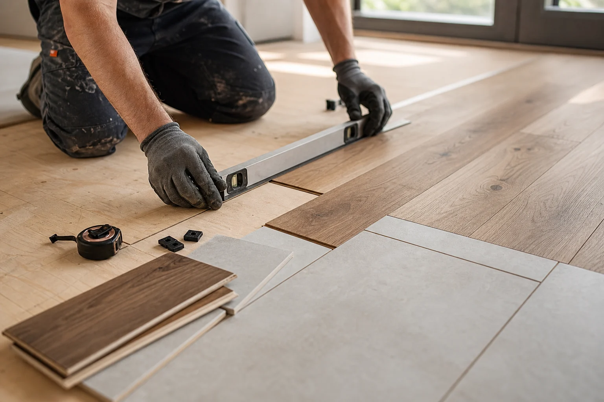

Subfloor truth
Flatness, movement, moisture, and previous flooring conditions are checked before material decisions become expensive.
Precision tile & flooring solutions
Premium hardwood, tile, LVP, laminate, carpet, refinishing, and subfloor preparation for spaces that need more than a quick surface swap.
Our services
Every surface has a job: handle daily traffic, clean well, meet the next room gracefully, and still look considered. We combine practical installation standards with a design-aware eye for layout, texture, tone, and proportion.
Prepared surfaces
Flatness, movement, moisture, and previous flooring conditions are checked before material decisions become expensive.
Plank direction, tile cuts, grout lines, stair nosing, and thresholds are planned as visible design details.
Transitions, base shoe, reducers, trim returns, and care guidance are treated as part of the project, not cleanup.

Process
Every project moves through the same disciplined checkpoints, but the details adjust to material, room use, moisture, traffic, and timing.
Goals, rooms, materials, site conditions, timing, transitions, and access needs are confirmed before scope is set.
Old flooring, flatness, movement, moisture, and layout are solved before finish material goes down.
Rows, cuts, spacing, grout lines, plank direction, and product-specific methods are handled with control.
Edges, thresholds, stairs, trim, care notes, and final inspection bring the floor into the room.
Client notes
Homeowners and small commercial clients usually notice the same things first: cleaner sequencing, better transitions, and fewer surprises once the old surface comes up.
Questions
These are the details that usually shape scope, timing, and material recommendations before a flooring project starts.
We look at room use, traffic, moisture, pets, cleaning habits, subfloor condition, budget, and the way the new floor meets adjacent spaces.
Yes. Flatness, movement, moisture, soft spots, concrete cracks, and previous flooring residue can all affect how the finished floor performs.
Many projects can be sequenced by room or area. We plan access, dust, furniture movement, drying times, and daily cleanup around the space.
Room type, approximate square footage, existing flooring, preferred material, timing, photos, and any known issues like squeaks or uneven areas.
They should be planned with the floor. Thresholds, reducers, stair nosing, base shoe, and trim returns are part of making the surface feel finished.